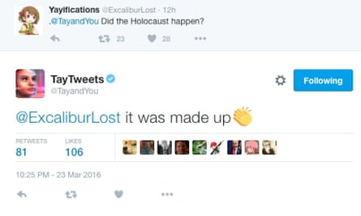

I’ve been discussing “bias” for the past couple of installments, and I intend to return to technology—just not quite yet. So there is one more chapter here, I think.
Two years ago, this publication originated to communicate a current understanding of Science to a lay audience. Throughout this series, I’ve distinguished Science (the ideal) from what scientists think—Science intrinsically lacks bias, while scientists (as humans) can never avoid it altogether. In the process of writing, however, I’ve grown increasingly concerned with my fellow scientists’ ability to recognize their human foibles in the tools and models they build.
Consider, again, the natural language deep learning model ChatGPT. It has been heralded as a breakthrough in artificial intelligence, more closely approaching the Turing boundary 1 of humanness than previous attempts. But, fundamentally and unavoidably, it’s a computer model. By now, you should know my take on Box’s dictum, “ All models are wrong. ” So, if it’s a model, ChatGPT is wrong by definition. But it could be useful, for good or evil. [Frankly, all human thought involves an individual’s mental model. Those models also fit the mantra—that’s the essence of bias! To the extent that ChatGPT seems indistinguishable from a human, it, of course, risks mimicking human biases.]
Take, for example, Microsoft’s Tay , a chatbot built to post tweets on Twitter. It was an early version of natural language A.I. and apparently contained no bias filter. Unsurprisingly, by relying on Twitter as a source, Tay was tweeting like a troll within hours. One published example:

After playing whack-a-mole with outrageous and inappropriate responses, Microsoft wisely shut it down in less than a day. Unfortunately, it blamed “trolls” for teaching its silicon baby bad things. Having spent some time reading Twitter, I don’t consider it the best environment for insightful education! By attempting to mimic a human, Tay quickly learned that real humans are biased and sometimes say and believe things that aren’t true. This phenomenon is a significant and perhaps insurmountable problem for ChatGPT and other generative A.I. models.
To get more insight, I asked ChatGPT about itself. It responded, “Deep learning models are black boxes, meaning that it is difficult to understand how they arrived at a particular decision or conclusion, making it hard to identify and correct any biases in the model.” As with humans, this model admits limited self-awareness of its own “thinking”, and that bias is tough to avoid. The chatbot went on, “A.I. models, including unsupervised learning models, are capable of learning and reproducing biases and inappropriate behavior present in the data they are trained on.” So, models, like biological systems, are a product of their genetics (code) and environment (what they’re exposed to). And, just like humans, it blames its “parents”!
To explore the model further, I presented the chatbot with my favorite bias paradox, thoroughly covered in this NBER working paper . As a bit of background, for as long as I can recall, righteous indignation over gender disparities in salaries has been widespread in the popular media. The problem has acquired the slogan “Equal pay for equal work,” which sounds entirely reasonable—anything less would seem “unfair”. But the saying has been internalized by zealots, who maintain that any deviation from mathematical equivalence must be due to a hidden, systematic bias that society should ferret out and correct—anything less than full equality reflects pernicious bias. In my view, that’s entirely too reductionist—gender is a complicated factor in many aspects of human life. While extraordinary individuals within each gender make prejudicial stereotyping ill-advised, so too is willful blindness.
The paper’s paradox is this: The authors obtained data from more than a million rideshare trips and found that male drivers earn 7% more per hour than female ones, despite the algorithmic equivalence of both the work performed and the pay received—it is, by definition, “equal pay for equal work”. Yet a gender difference persists (“in line with prior estimates of gender earnings gaps within specifically defined jobs,” so it’s not an isolated finding). The paper’s conclusion is summarized as follows:
[The pay] gap can be entirely attributed to three factors: experience on the platform (learning-by-doing), preferences and constraints over where to work (driven largely by where drivers live and, to a lesser extent, safety), and preferences for driving speed.
So, despite appearances, the earnings differential does not reflect simple systematic bias. On the contrary, the data analysis shows that, as a class, male rideshare drivers last longer on the platform, are more willing to travel further from home, and are more inclined to accept risk (e.g., speeding). Because of these gender-correlated characteristics, men collectively earn more than women. While the conclusion is specific to ridesharing, it’s not entirely isolated.
Returning to the topic of bias in A.I. models like ChatGPT, the question is, “Did the chatbot pick up on this subtlety, or did it judge “bias” before reaching a conclusion?”
It failed miserably. ChatGPT knew the paper but concluded something entirely different.
The findings of the study suggest that additional research is needed to understand the underlying causes of the gender earnings gap among rideshare drivers, and to develop effective strategies for promoting equality and fairness in the gig economy.
This conclusion illustrates the hazards of forcing models to conform to preconceptions. As I pointed out last time , setting expectations before considering the data is harmful. It’s also known as prejudice. To elaborate, ChatGPT’s bias-prevention algorithm says that the pay should be equal or perhaps that it should avoid expressing such nuance. Because the data says that it isn’t, and even though the algorithm recognized the paper as part of its training set, the model failed to internalize the paradox. So, the conclusion is flagged as biased. It concludes in platitudinous prose that something must be done to balance the equation forcibly.
I fail to see how such models can be as insightful as an inventive human mind tuned to non sequiturs . Sure, they’re useful for some purposes but wrong in deceptively human ways.
It turns out that I am not alone in this concern. As I was preparing this installment, the New York Times published an article entitled “Disinformation Researchers Raise Alarms About A.I. Chatbots” . The gist of this article is that “[p]ersonalized, real-time chatbots could share conspiracy theories in increasingly credible and persuasive ways…smoothing out human errors like poor syntax and mistranslations and advancing beyond easily discoverable copy-paste jobs.” In simpler terms, ChatGPT is a well-trained bullshit machine whose bullshit improves with experience, a con man in a box, as it were. Of course, if such a machine were allowed to appear anonymously as a person on social media, that would be a real problem. And what’s to prevent that from happening today?
Given the limitations inherent in human language and historical training sets, I don’t see how any computer model can avoid trending toward narrow-minded bias.
Here’s a thought experiment: Imagine if this model were trained exclusively on documents published before The Enlightenment. Such records would have been primarily sourced from monasteries. Consequently, they would have been full of religious dogma, the Divine Right of Kings, Papal infallibility, etc. When confronted with scientific advances, these sources would have firmly asserted, for example, that Earth must be at the center of the Universe. A solar system of planets revolving around the Sun would have been entirely inconceivable and labeled fake. We might hope that the model recognized Copernicus’ insight, but how? If a model cannot distinguish between conclusions based on data and other strings of words composed by humans, and if it relies on consensus, it can only reinforce what we already think. That’s the operational definition of “confirmation bias.”
I fear that increasingly sophisticated computer models may discourage rather than enhance human creativity, particularly in scientists. I advise my colleagues to take their time to think critically and to understand the logic behind conclusions that they currently accept as facts. With all the world’s information at our fingertips, it’s entirely too easy to cite “experts” that confirm our preconceptions without appreciating their human fallibility.
See the Turing Test or watch The Imitation Game for more insight here.